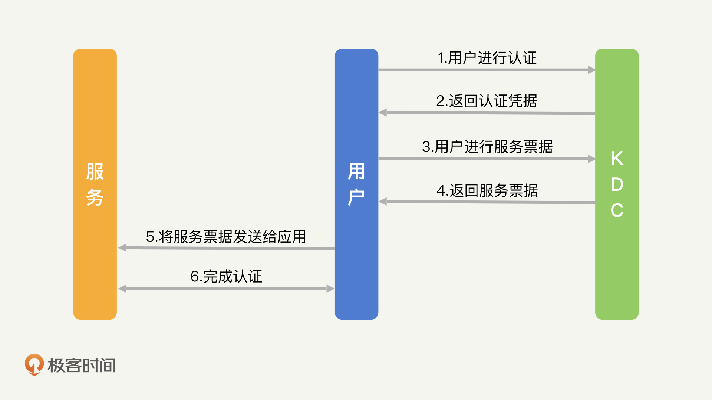
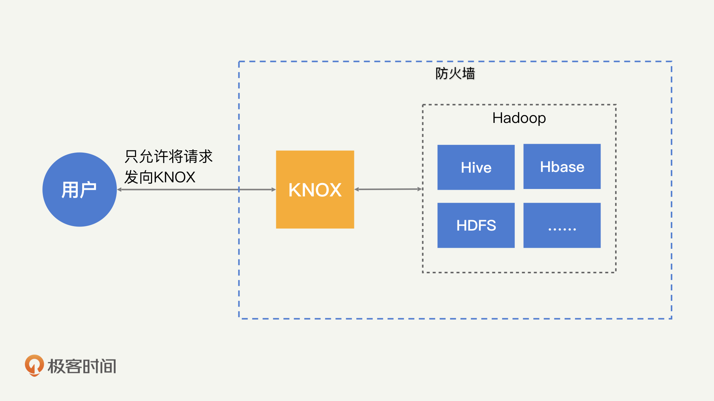
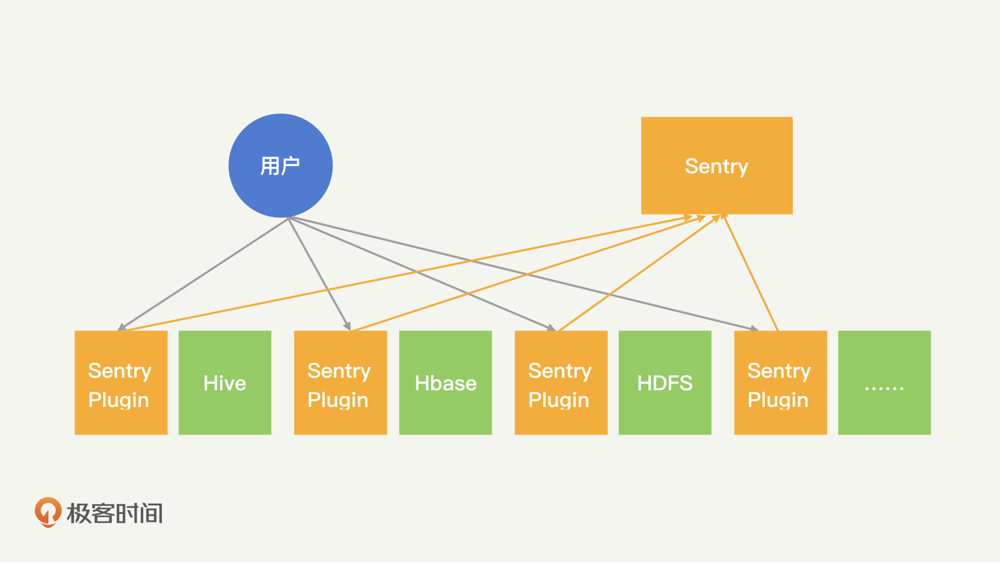
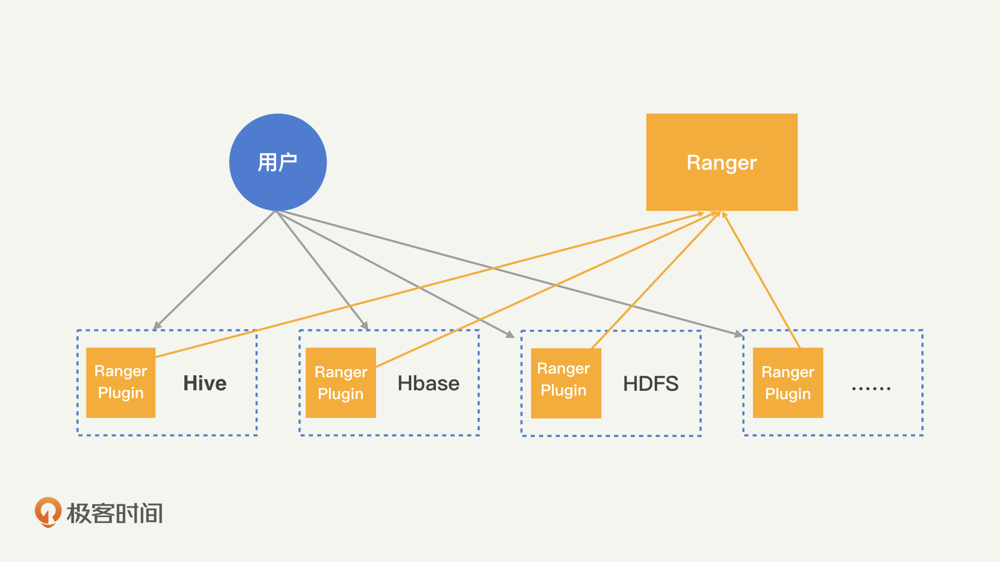
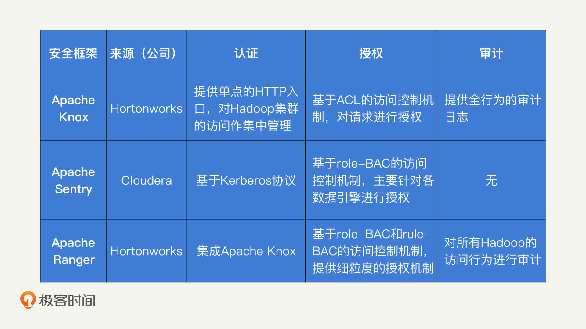

- 00 开篇词 别说你没被安全困扰过.md.html
- 01 安全的本质：数据被窃取后，你能意识到问题来源吗？.md.html
- 02 安全原则：我们应该如何上手解决安全问题？.md.html
- 03 密码学基础：如何让你的密码变得“不可见”？.md.html
- 04 身份认证：除了账号密码，我们还能怎么做身份认证？.md.html
- 05 访问控制：如何选取一个合适的数据保护方案？.md.html
- 06 XSS：当你“被发送”了一条微博时，到底发生了什么？.md.html
- 07 SQL注入：明明设置了强密码，为什么还会被别人登录？.md.html
- 08 CSRF_SSRF：为什么避免了XSS，还是“被发送”了一条微博？.md.html
- 09 反序列化漏洞：使用了编译型语言，为什么还是会被注入？.md.html
- 10 信息泄露：为什么黑客会知道你的代码逻辑？.md.html
- 11 插件漏洞：我的代码看起来很安全，为什么还会出现漏洞？.md.html
- 13 Linux系统安全：多人共用服务器，如何防止别人干“坏事”？.md.html
- 14 网络安全：和别人共用Wi-Fi时，你的信息会被窃取吗？.md.html
- 15 Docker安全：在虚拟的环境中，就不用考虑安全了吗？.md.html
- 16 数据库安全：数据库中的数据是如何被黑客拖取的？.md.html
- 17 分布式安全：上百个分布式节点，不会出现“内奸”吗？.md.html
- 18 安全标准和框架：怎样依“葫芦”画出好“瓢”？.md.html
- 19 防火墙：如何和黑客“划清界限”？.md.html
- 20 WAF：如何为漏洞百出的Web应用保驾护航？.md.html
- 21 IDS：当黑客绕过了防火墙，你该如何发现？.md.html
- 22 RASP：写规则写得烦了？尝试一下更底层的IDS.md.html
- 23 SIEM：一个人管理好几个安全工具，如何高效运营？.md.html
- 24 SDL：怎样才能写出更“安全”的代码？.md.html
- 25 业务安全体系：对比基础安全，业务安全有哪些不同？.md.html
- 26 产品安全方案：如何降低业务对黑灰产的诱惑？.md.html
- 27 风控系统：如何从海量业务数据中，挖掘黑灰产？.md.html
- 28 机器学习：如何教会机器识别黑灰产？.md.html
- 29 设备指纹：面对各种虚拟设备，如何进行对抗？.md.html
- 30 安全运营：“黑灰产”打了又来，如何正确处置？.md.html
- 加餐1 数据安全：如何防止内部员工泄露商业机密？.md.html
- 加餐2 前端安全：如何打造一个可信的前端环境？.md.html
- 加餐3 职业发展：应聘安全工程师，我需要注意什么？.md.html
- 加餐4 个人成长：学习安全，哪些资源我必须要知道？.md.html
- 加餐5 安全新技术：IoT、IPv6、区块链中的安全新问题.md.html
- 模块串讲（一）Web安全：如何评估用户数据和资产数据面临的威胁？.md.html
- 模块串讲（三）安全防御工具：如何选择和规划公司的安全防御体系？.md.html
- 模块串讲（二）Linux系统和应用安全：如何大范围提高平台安全性？.md.html
- 结束语 在与黑客的战役中，我们都是盟友！.md.html
- 捐赠
17 分布式安全：上百个分布式节点，不会出现“内奸”吗？
你好，我是何为舟。
如今，大数据处理已经成为了每一个应用和公司都必备的业务。因此，除了数据库之外，分布式的平台和框架也是开发人员最熟悉的工具之一。
说到分布式，就不得不提到Hadoop。Hadoop可以说是一个划时代的分布式框架，底层的HDFS提供了大数据存储的文件系统支持，YARN提供了大数据运算的资源调度能力，而MapReduce的计算框架，更是彻底革新了数据运算的方式。基于此，Hadoop又衍生了一系列的分布式工具和数据处理生态圈。
可以说，Hadoop是分布式框架的根基。所以，我们今天就以Hadoop为例，探讨一下分布式框架的安全性。
对于开发人员来说，优化分布式环境下的数据处理性能，完成各种高复杂度的运算任务，都不在话下。但是，说到分布式环境中的安全，你又知道多少呢？
现在的分布式环境中，动辄就是上百台的分布式节点，海量的数据在这些节点中不停地流动，你能够确定所有的节点都是可信的吗？如果某一个节点被黑客控制了，又会发生什么呢？
针对Hadoop的攻击方式有哪些？
Hadoop最开始是设计工作在可信的网络中的，所以，Hadoop的默认安全防护机制并不强。这也就使得Hadoop中的数据安全得不到保障。而Hadoop作为大数据的处理框架，可以说公司大部分的数据都会落到其中进行处理。因此，Hadoop中数据CIA的重要性，甚至比普通的数据库更高。
那么，黑客可以通过哪些方式来攻击Hadoop呢？
首先，最直接也是最常见的，也就是在默认情况下，Hadoop没有集成认证和授权功能，任何人都可以通过客户端的形式连入到Hadoop集群中。所以，黑客可以任意地增删改查HDFS中的数据，也可以任意地提交Hadoop任务，来进行自己想要的数据操作。
除了直接的越权访问，黑客也可以通过一些间接的方式，来窃取Hadoop中的数据。比如，Hadoop节点间的数据传输默认都是明文的。因此，即使黑客无法连入到Hadoop集群中，它们也可以通过控制交换机等网络设备，同样能够获得很多的数据信息。
最后，因为Hadoop能够很好地支持节点的增加和删除操作。所以，黑客可以以一个节点的身份加入到Hadoop集群中。这样一来，数据就会自动流转到黑客的节点中。如果伪装的是具备调度功能的NameNode，黑客还能够对整个Hadoop集群的资源调度进行干预和影响。
Hadoop自带的安全功能有哪些？
现在，你应该知道了，黑客针对Hadoop的攻击一旦发生，就会造成非常大的危害。那我们该如何提高Hadoop的安全性呢？和数据库一样，我们还是分别从认证、授权、审计和加密这四个方面来看。
黄金法则在Hadoop上如何应用？
首先，我们来看，如何给Hadoop加上认证的功能。
目前，Hadoop支持了基于Kerberos协议的认证功能，我们可以在配置文件中使用。
那Kerberos协议是什么呢？Kerberos协议和我们之前讲过的单点登录机制（CAS流程）很类似，都是向认证中心获取一个认证Token，然后根据Token去完成服务的认证。区别在于，Kerberos都是主动向认证中心发起认证，不需要服务去进行重定向操作。

接下来，我带你梳理一下Kerberos的流程，你可以结合上面的流程图来看。
用户在向KDC（Kerberos的认证中心）发起登录之后，会获取一个Token（Kerberos的ST），然后通过这个Token去访问对应的服务。Token中包含了签名，因此服务方可以自行验证Token的合法性。在认证完成之后，服务方就可以向用户提供服务了。
Kerberos比较适用于服务与服务之间的认证，对应到Hadoop的场景中，就是Hadoop集群中内部各个节点之间的认证。
那么，在使用了Kerberos认证机制后，我们要怎么去配置每一个Hadoop节点，来完成Hadoop集群的认证呢？这就需要我们在初始化Hadoop的各个节点时，为每个节点申请一个Kerberos的密钥文件Keytab。
Keytab文件会使用一个Principal作为唯一的身份标识。Principal的格式如下：username/host@realm。可以看到，Principal由三个部分组成：username、host和realm。
其中，“username”是服务所对应的用户身份。比如，Hadoop的服务会分别以hdfs用户运行HDFS服务、以yarn用户运行YARN服务、以mapred用户运行MapReduce服务。因此，对应各个服务节点的“username”就是hdfs、yarn和mapred。
“host”即为服务节点在DNS中的主机名，“realm”为域标示，可以使用根域名来替代，比如BAIDU.COM。
现在，我们知道，通过Principal，Keytab文件会和节点的服务类型以及Host进行绑定。这样一来，每个服务节点都具备了能证实身份的唯一ID和密钥，也就可以保证在整个Hadoop集群中，各个节点都是可信任的。
Kerberos协议同样可以完成对用户的授权。当认证开启后，只要用户登录一台配置好了Kerberos密钥的服务器，就能以节点的身份向Hadoop发起认证了。
总体来说，因为不同的Hadoop工具（Hive、HDFS等）对授权和审计有不同的需求，所以，这些授权和审计功能通常会放到具体工具中去实现，无法由底层的Hadoop统一完成。而这种不统一会增加Hadoop管理的工作量，因此，在实际工作中，我们往往会选择通过集成额外的安全框架，来对授权和审计进行统一管理。我会在Hadoop安全框架的内容中，详细来讲解授权和审计机制。
Hadoop中有哪些加密形式？
在黄金法则之外，我们需要考虑的另外一点就是数据加密。和MySQL数据库一样，Hadoop也支持对硬盘数据进行加密存储，这个过程主要集中在HDFS中：当数据写入HDFS时，数据会自动加密；当需要从HDFS读取数据时，数据会自动解密。在MySQL中，我们是以表为单位分配不同的密钥；在HDFS中，则需要我们主动创建Zone来进行加密。
比如，通过下面的命令，我们能够在HDFS中创建一个/zone目录，对/zone目录中的所有数据进行加密。
hadoop fs -mkdir /zone
hdfs crypto -createZone -keyName mykey -path /zone
但是，和MySQL数据库不同的是，HDFS是一个分布式的存储系统，一份大数据会被分成若干个小数据，存储在不同的服务节点上。那么，HDFS是怎么对加密密钥进行管理的呢？Hadoop提供了一个密钥管理中心KMS，当HDFS需要进行加解密操作时，会根据用户信息，向KMS请求对应的密钥，从而完成数据的加解密工作。
通过Hadoop安全框架来加强安全功能
Hadoop作为一个成熟的开源框架，当出现安全需求时，各个公司都会对其进行安全加固。当这些加固的技术成熟时，部分公司就会对这些技术进行整理，包装成为Hadoop提供安全加固的框架供我们使用。
接下来，我就从我最熟悉的3个知名安全框架入手，为你详细讲解这些安全框架分别为Hadoop提供了哪些安全机制。
首先我们来看Apache Knox。
Apache Knox是一个针对Hadoop集群的网关。所有对Hadoop集群的请求，需要先发送给Apache Knox，然后由Apache Knox代理到Hadoop集群中去。对于用户来说，只能够看到Apache Knox的网关，而不能够直接和Hadoop集群进行通信。通过网关的形式，Apache Knox将所有和Hadoop交互的行为进行了统一收口。在此基础之上，Apache Knox就可以为Hadoop提供统一的安全管理能力，也就是进行用户的认证、授权和审计等工作。

接着，我们再来说一说Apache Sentry。
Apache Sentry相当于一个为Hadoop提供集中式授权的中心。它在Hive、Impala等数据引擎中添加一个插件，拦截所有对数据引擎的请求，并转发到Apache Sentry的授权中心。然后Apache Sentry会基于role-BAC的访问控制方式，对请求进行具体的授权。对于Hadoop的各类组件来说，Apache Sentry是一个比较独立的授权引擎，可以随时地引入或者撤除。也就是说，Apache Sentry为Hadoop提供了可“插拔式”的授权能力。

最后是Apache Ranger。
Apache Ranger提供了一个集中制的访问控制机制。通过Apache Ranger的管理后台，我们可以很方便地管理各类资源的授权机制。而且，这些授权机制是通过一个轻量级的Java插件，运行在各类工具的服务进程（比如HDFS的namenode进程，Hive的Hive2Server进程等）中，所以，在Hadoop的服务节点上，不需要运行额外的进程。尽管耦合性更强，但Apache Ranger更便于管理，它相当于在每一个Hadoop工具中都加入了授权的能力。

为了帮助你加深理解，我把这三个安全框架的功能简单地总结了一张表格。

现在，你应该已经了解这3个安全框架能够提供的安全机制了。接下来，我们说一说，在实际工作中，你该如何选择这些安全框架。
我比较推荐你使用Apache Ranger和Apache Knox的组合。因为Apache Ranger和Apache Knox是同一个公司（Hortonworks）推出的安全框架，它们在功能上是相辅相成。
我为什么会这么说呢？我们前面讲过，Apache Ranger是一个授权系统，它通过访问授权机制决定，谁可以访问哪些数据。但是，Apache Ranger没有自带的认证功能，当请求到达Apache Ranger的时候，它就默认这个用户已经完成认证了。Apache Knox提供了统一的出入口，只有通过认证的用户，能够将请求发送到Hadoop集群中。简单来说就是，Apache Knox为Ranger提供了认证能力，Apache Ranger为Apache Knox提供了授权能力。
那Apache Sentry是不是也能和其他的安全框架组合使用呢？其实，我认为Apache Sentry和Apache Ranger，只是两家公司为了竞争开发的同一类产品。因此，它们在功能上比较相似，只是支持的Hadoop工具稍有区别，比如，Apache Sentry支持Impala，而Apache Ranger 不支持。
现在，Apache Sentry和Apache Ranger的两家公司已经完成合并，并且已经决定将Apache Sentry合并到Apache Ranger中。所以，如果你需要为Hadoop加入安全框架的话，使用Apache Knox+Apache Ranger的组合即可，不需要再去考虑其他安全框架了。官方网站也对这种组合形式进行了具体的描述，你可以直接查阅使用。
总结
好了，今天的内容讲完了。我们来一起总结回顾一下，你需要掌握的重点内容。
我们以Hadoop为例，详细讲解了分布式系统中的安全风险和安全措施。如果Hadoop缺乏安全保护措施，那么其中的数据就会受到威胁。黑客可以通过伪装成用户、伪装成节点或者窃听网络的方式破坏数据的CIA。
在防护上，我们可以通过认证、授权、审计和加密的方式，对Hadoop进行保护。除此之外，Hadoop作为成熟的开源框架，有很多公司为其打造了增强安全能力的辅助工具。我比较推荐你使用Hortonworks的Apache Knox和Apache Ranger的组合。
思考题
最后，我们还是来看一道思考题。
在Hadoop安全中，我们介绍了“外挂式”的安全工具和框架。所谓“外挂式”，即应用本身不提供足够的安全能力，而由外接的工具来提供安全能力。你可以回忆一下，你还在哪些场景中见过类似的安全模式？这个安全模式又有哪些优缺点？
欢迎留言和我分享你的思考和疑惑，也欢迎你把文章分享给你的朋友。我们下一讲再见！
© 2019 - 2023 Liangliang Lee. Powered by gin and hexo-theme-book.